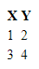

Publicerad: 12 September 2020
HTML
Ytterligare HTML information från MDN.
DOM Tree

Ett DOM träd, används inte bara för HTML.
Viktiga element
Paragraf - <p>
<p></p>
Ett paragraf element. Används för indelning av ett nytt text stycke, den lägger en visuell radavstånd från andra element på sidan. Du kan inte ha en paragraf i en paragraf, men om du vill lägga till ett radavstånd kan du använda dig av...
Bryt linje - <br>
<br>
... Som betyder "break line". Alltså bryt linje.
Bild - <img>
<img src="https://www.google.se/images/branding/googlelogo/2x/googlelogo_color_272x92dp.png">
Ett bild element. Används för att lägga till en bild i dokumentet. Inom "src"s citattecken ska du ha en länk, en hypertext, som tar dig till bilden.
"Fetstil" - <strong>
<strong>
Strong.
</strong>
<strong> används för att markera att texten är viktig.
Mer information här för <b>
och
mer information här för <strong>.
"Kursiv" stil - <i>, <cite>
<i>
Italic text.
</i>
<cite>
En citering.
</cite>
Ett kursiv stil element. Högerlutande bokstavsform. <i> kan användas för olika idiomatiska
syften men <cite> bör användas när man citerar någon
eller något men båda kan användas för
att böja på text.
Mer information här för <i>
och
mer information här för <cite>.
Markera - <mark>
<mark>
Markerar mig med en gul bakgrund.
</mark>
Ett markerings element. Markerar texten med en gul bakgrund. Används för referens, eller noterings syften.
Mer information här.Citering - <q>
<q>
Runt detta stycke kommer citat-tecken att dyka upp.
</q>
Ett citerings element. Texten får citattecken på början och på slutet. Används för citat.
Mer information här.Utökad citering - <blockquote>
<blockquote cite="https://www.huxley.net/bnw/four.html">Mer information här.
<p>Words can be like X-rays, if you use them properly—they’ll go through anything. You read and you’re pierced.</p>
<p>-- Aldous Huxley, <cite>Brave New World</cite></p>
</blockquote>
Tabell - <table>, <thead>, <tbody>, <tr>, <th>, <td>
<table>
<thead>
<tr>
<th></th>
</tr>
</thead>
<tbody>
<tr>
<td></td>
</tr>
</tbody>
</table>
Ett tabell element. Används för att bygga upp tabeller. THEAD är topp raden, och definerar hur många kolumner
det ska finnas.
I THEAD finns en rad, alltså TR. Och inuti TR finns ett huvud, alltså TH. Lägg till flera TH för att
definera hur många kolumner varje TR i TBODY skall ha.
Exempel:
<table>
<thead>
<tr>
<th>X</th>
<th>Y</th>
</tr>
</thead>
<tbody>
<tr>
<td>1</td>
<td>2</td>
</tr>
<tr>
<td>3</td>
<td>4</td>
</tr>
</tbody>
</table>
som blir till:
